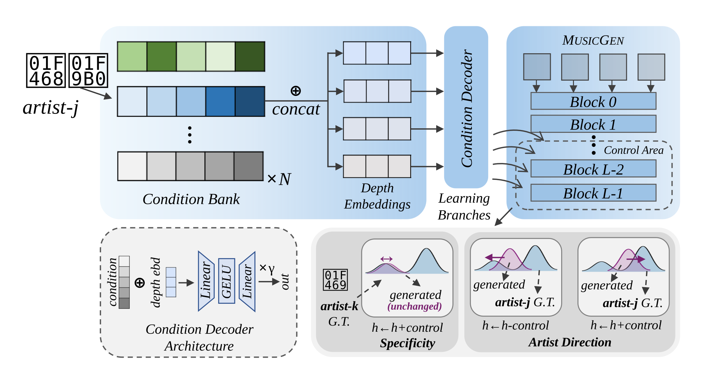

Learning Post-Hoc Artist Controls For Artist Suppression In Audio Music Generation
Abstract
Uncertain data provenance and changing artist consent motivate data-side and model-side safeguards, while all require re-training, for music generation. To address this problem, we hypothesise that additive directions learned to improve prediction on an artist's recordings can be reversed to suppress artist-associated characteristics without request-specific updates to the generator. Our method jointly learns a compact bank of artist conditions and a shared decoder produce layer-wise controls after removing peer references, which isolates artist-specific structure from properties shared with stylistically close artists. These controls are later added to enhance and subtracted to suppress a given artist, accompanied by a specificity regularizer bounds the effect of such controls on unrelated artists. On MusicGen with 128 artists, these controls reduce artist attribution of an independent artist classifier from 42% to 14% for single requests and 7% for joint requests, while leaving generation unchanged whenever no request is in force. Suppression is therefore immediate, reversible and composable across requests, making it a practical complement to data-level removal.

Audio comparisons
Listen to the prompt and reference first, then switch between generated outputs at the same playback position. MERT–GT is cosine similarity to the reference; higher values indicate greater similarity.
Preparing the listening examples…
Single-target suppression
Examples in which one selected musical identity is suppressed.
Multiple-target suppression
Examples in which multiple musical identities are suppressed jointly.
Quantitative results
Quantitative evaluation of suppression efficacy, preservation, and generation quality.
Loading quantitative results…